地政学
ケープタウンは南アフリカ議会を置く立法首都で、大西洋とインド洋の回廊を見渡す港湾都市です。欧州、アフリカ南部、南大西洋の航路、移民、外交、海上安全保障が近く、観光の風景にも国家の重心が重なります。

🇿🇦 南アフリカ / アフリカ / World City Atlas
テーブルマウンテン、南アフリカ議会、港湾、ワイン産地、多言語文化、アパルトヘイトの記憶、住宅格差、水危機が重なる大西洋岸の都市を読みます。
都市の骨格
ケープタウンはテーブル湾とテーブルマウンテンの間に中心部を置き、港、議会、観光地、旧市街、タウンシップ、ワイン産地への道が同じ都市圏に重なります。
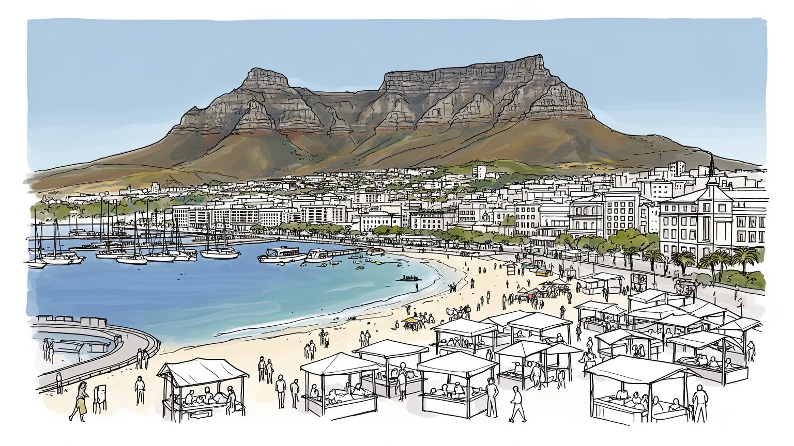
ケープタウンは南アフリカ議会を置く立法首都で、大西洋とインド洋の回廊を見渡す港湾都市です。欧州、アフリカ南部、南大西洋の航路、移民、外交、海上安全保障が近く、観光の風景にも国家の重心が重なります。
港湾物流、金融、観光、映画、大学、ワイン、創造産業が都市の雇用を作ります。一方で清掃、警備、飲食、建設、通勤輸送、家事労働、季節労働が日常を支え、所得差と住む場所の距離が働く条件を大きく左右します。
アフリカーンス語、英語、コサ語が交わり、イスラム教、キリスト教、伝統文化、音楽、料理、カーニバルが地区ごとに息づきます。奴隷制、植民地支配、アパルトヘイトの記憶は、博物館と家族史の双方に残ります。
山、海岸、岬、港、ワインランドは強い観光資源です。住民には住宅不足、水不足、治安、長い通勤、鉄道の弱さ、電力不安、空間分断が日々の課題です。景観と生活の不平等を同時に読む都市です。海風も身近です。
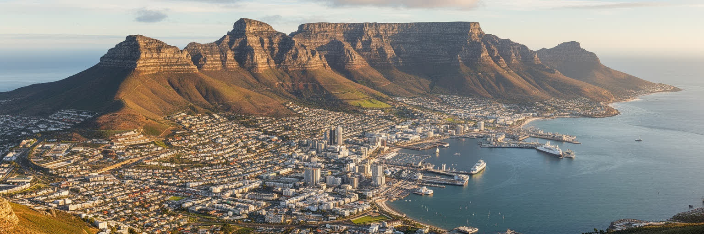
ケープタウンの都市像は、テーブルマウンテンを抜きに語れません。平らな山頂、ライオンズヘッド、シグナルヒル、テーブル湾、大西洋岸、フォールス湾が、中心部の距離感と景観を決めています。山は観光の記号であると同時に、海風、冬雨、乾いた夏、フィンボスの香り、山火事の煙、交通の回り道を作る地形です。中心市街は山と海の細い平地にあり、土地の希少性は住宅価格や再開発圧力に直結します。斜面の高級住宅地からは潮の光る海が見えますが、低所得層の多くは内陸のケープ・フラッツや遠いタウンシップに押し出されてきました。海岸、国立公園、植物相の保護は都市の誇りですが、通勤路、消防、観光混雑、自然保護と住宅需要の調整も必要です。展望台からは都市の形が明快に見えても、地上の生活は地区ごとに大きく違います。山の近さは登山、ピクニック、カーステンボッシュの夏の野外コンサートを楽しむ資源であり、同時に都市の不平等をくっきり映す壁でもあります。朝の霧、午後の強風、夕方の潮の匂いは、通勤や洗濯物、屋外席の選び方まで左右します。自然は遠い背景ではなく、毎日の身体感覚として都市を包みます。週末の家族連れや学生の散歩も、この地形を身近な広場に変えます。海もすぐ近くにあります。眺望の美しさと避難路の確保は、同じ地形から生まれる課題です。
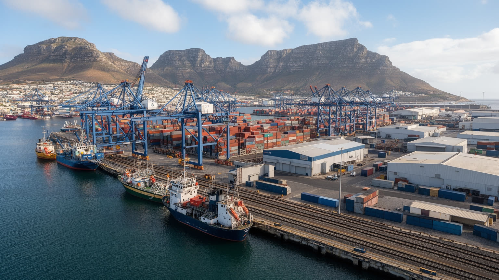
ケープタウン港は、観光客の目に入りやすいウォーターフロントの隣で、コンテナ、果物、ワイン、魚、燃料、修理、旅客船を扱う実用の港です。南アフリカ西岸の玄関であり、欧州、南大西洋、アフリカ西岸、インド洋を結ぶ航路の一部でもあります。冷蔵物流は西ケープの農産物輸出に欠かせず、港の遅延や鉄道の不調は農場、倉庫、トラック運転手、輸出業者の収入に響きます。岸壁の近くでは潮の匂い、ディーゼルの煙、魚市場の声が重なり、埠頭の外ではフィッシュ・アンド・チップスの店や土産物店が港の風景を日常へ引き込みます。再開発地のレストランやホテルは港を商品にしますが、貨物を動かす労働は見えにくくなりがちです。ケープタウンの港を読むには、クレーンや客船だけでなく、冷蔵倉庫、税関、整備工場、漁船、早朝の市場、港へ向かう貨物列車を見る必要があります。港で働く人は中心部の近くで仕事をしても、住まいは遠いことが多く、夜明け前の移動と休憩時間が収入を左右します。観光客の買い物袋と輸出コンテナは、同じ岸辺で別々の都市経済を見せます。港の競争力は道路、鉄道、電力、治安、通関の弱点に左右されます。市場の鮮魚もこの動線に支えられます。海辺の都市であることは、景色を売ることだけでなく、貨物、食、通勤、休息を正しく扱う責任を持つことです。
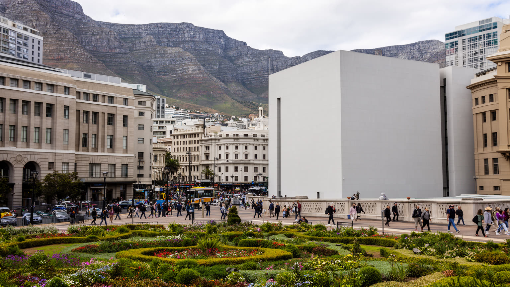
ケープタウンは南アフリカの立法首都で、国会議事堂、行政機関、裁判、報道、抗議の場が中心部に集まります。行政首都プレトリア、司法の中心ブルームフォンテーンと役割を分ける国家構造の中で、ケープタウンは議論と法制定を引き受ける都市です。議会の存在は観光地の一部ではなく、植民地支配、連邦制、人種隔離、民主化後の政治をつなぐ場所として重い意味を持ちます。中心部の通りでは、政府への抗議、労働組合の行進、土地返還や住宅を求める声、治安対策、式典の交通規制が日常の景観に入ります。昼には学生や公務員が会社庭園を抜け、夜にはロングストリートの店、クラブ、バーへ人が流れますが、公共空間の近さは誰にとっても同じ安心を意味しません。週末には博物館、図書館、カフェ、ショッピングの客が政治地区の周囲を歩き、議会の重さと日常の軽さが隣り合います。大学の討論や学生運動も、首都機能に近い場所で政治を身近にします。政治都市としてのケープタウンを読むには、議事堂の外観だけでなく、公共交通で中心へ来る市民、請願の列、報道カメラ、警備員、周辺で働く清掃員の姿を合わせて見る必要があります。議会火災の記憶や復旧作業も、公共機関を守る難しさを示します。政治の言葉が子ども、高齢者、遠い地区の通勤者へ届く距離も、この都市の重要な尺度です。
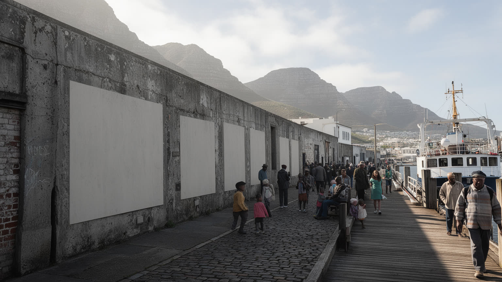
ケープタウンの都市空間は、アパルトヘイトの記憶を強く残しています。ディストリクト・シックスでは、住民が強制的に立ち退かされ、近隣関係、学校、商店、礼拝、音楽、家族史が引き裂かれました。その土地の空白や博物館は、過去の暴力を説明するだけでなく、返還、補償、記憶の継承が今も未完であることを示します。ロベン島は政治犯の収容所として知られますが、都市の不平等は記念施設だけでは終わりません。人種別居住、移動制限、職業差別の構造は、民主化後も住宅市場、学校区、通勤時間、資産形成、治安の差として残っています。ボーカープの色鮮やかな家並みやモスク、ケープ・マレーの食卓、アフリカーンス語や英語の家族史も、観光写真だけでは読み切れません。ケープタウンを読むには、ディストリクト・シックス、ボーカープ、ロベン島、ケープ・フラッツを別々の名所としてではなく、同じ都市の歴史として結ぶ必要があります。カーニバルの音、ジャズの記憶、家族の料理は、失われた地区が単なる過去ではなく生活文化だったことを伝えます。過去を語る言葉が観光向けに整うほど、現在の住宅や雇用の不平等も問われます。家族写真、教会やモスクの名簿、失われた店の住所は、統計では見えない損失を語ります。その細部を保存することが、和解の言葉を空虚にしない条件です。
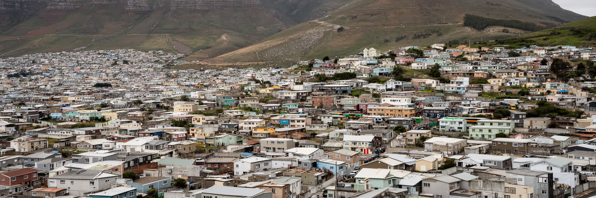
ケープタウンの住宅問題は、中心部の家賃が高いというだけではありません。アパルトヘイト期の空間計画によって、多くの黒人やカラードの住民はケープ・フラッツや周辺タウンシップへ押し出され、仕事や大学、病院、観光地から遠い場所で生活してきました。カエリチャ、ミッチェルズ・プレイン、ググレトゥなどの地区には、強い地域文化、教会、学校、起業、音楽、家族の支えがあります。美容室、修理店、携帯電話店、屋台、送金、地域交通がタウンシップ経済を作り、子どもの通学や高齢者の買い物を支えます。同時に上下水道、電力、治安、交通、洪水、火災への脆弱さも抱えます。観光客の泊まる海辺と、サービス業で働く人の住まいが遠く離れていることは、都市の労働構造その核心です。ケープタウンを読むには、ウォーターフロントや山麓の住宅だけでなく、早朝に長距離移動する労働者、ミニバスタクシーのクラクションと掛け声、混雑した駅、インフォーマル住宅の改修、地域の自助活動を見る必要があります。地区の小さな商売は現金収入だけでなく、信用、見守り、情報交換の場にもなります。夕方の煙や炭火も生活の匂いです。土地返還や社会住宅の議論は、過去の補償であると同時に、未来の通勤時間を変える政策です。家の場所は、子どもの学校選択や親の介護にも影響し続けています。
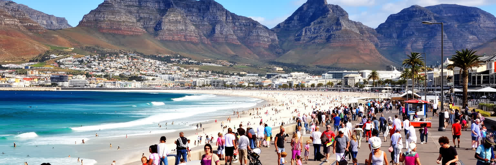
ケープタウンの観光は、テーブルマウンテン、V&Aウォーターフロント、キャンプスベイ、クリフトン、ケープポイント、ロベン島、カーステンボッシュ、ワインランドを結ぶ強力な組み合わせで成り立っています。山へ登り、海岸を走り、港で食事をし、歴史を学び、郊外のワイナリーへ向かう旅行動線は、短い滞在でも豊かな印象を残します。V&Aウォーターフロントでは買い物、食事、映画館、水族館、船着き場が集まり、ロングストリートや周辺の店では夜の音楽とクラブ文化が続きます。Cape Town Cycle TourやTwo Oceans Marathonの時期には、海風を受ける道路や山裾の坂が都市全体の舞台になります。観光はホテル、飲食、交通、ガイド、清掃、警備、文化施設、土産物、イベントに雇用を生みますが、季節性、低賃金、住民の生活費上昇、人気地区の混雑も伴います。海岸の美しさは公共の財産である一方、高級住宅や観光施設が海へのアクセスを事実上狭めることもあります。家族連れ、高齢の旅行者、学生グループでは、同じ観光地でも歩く速度や安全への関心が違います。観光地としてのケープタウンを読むには、写真の美しさだけでなく、観光が誰に仕事を与え、誰の家賃を上げ、誰の海岸利用を変えるのかを見る必要があります。海と山は都市の看板である前に、共有される環境です。
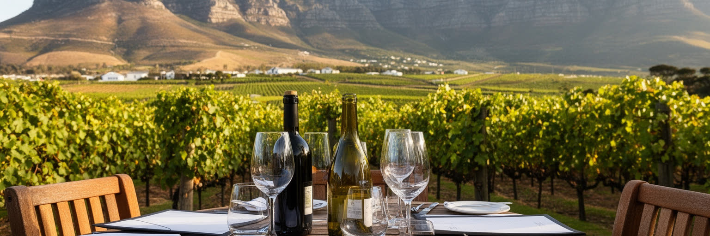
ケープタウンの食文化は、港、ワイン産地、奴隷制と移民の歴史、アフリカ南部の農業に支えられています。近郊のステレンボッシュ、フランシュフック、パールへ続くワインランドは、観光と輸出の顔であり、ブドウ栽培、醸造、レストラン、宿泊、物流、季節労働の大きな産業です。中心部やボーカープでは、ケープ・マレー料理、スパイス、魚料理、パン、菓子、家庭のレシピが地区の記憶を伝えます。海沿いではフィッシュ・アンド・チップス、家族の集まりではブライ、週末にはオラニエジヒトやネイバーグッズのような市場、タウンシップの食堂、大学近くの安い食事が人を集めます。レストランの華やかさは農場、港、厨房、清掃、配送の仕事に支えられます。一方で、ワイン産業は土地所有、労働条件、低賃金、移民労働者、農場住宅の問題とも切り離せません。ワインの試飲は優雅な体験ですが、畑の暑さ、収穫期の雇用、輸出価格の変動も同じ産業の一部です。ケープタウンの食を読むには、高級レストラン、港の魚、家庭のスパイス、ワイン農園の労働、学生や観光客が交じる市場を一つの流れとして見る必要があります。食は観光商品であると同時に、土地、海、移民、宗教、階層の記憶を運びます。誰が作り、誰が食べ、誰が利益を得るのかを考えると、皿の上に都市の歴史と記憶が現れます。
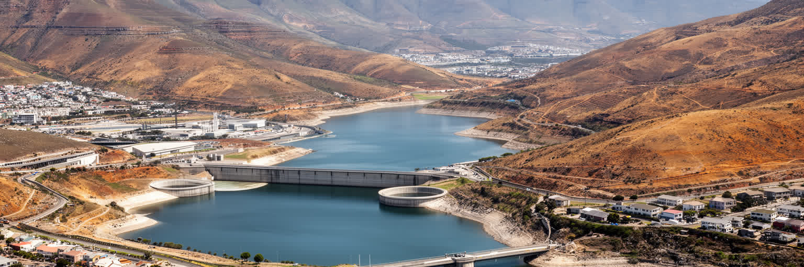
ケープタウンの気候は地中海性で、夏は乾き、冬に雨が多く降ります。夏の午後には海風が強まり、乾いた草やフィンボスの匂い、遠くの山火事の煙、海岸の潮の気配が街へ入り込みます。冬は雲が山にかかり、雨が坂道と排水路を流れ、家の断熱や通勤の不便を意識させます。この快適さは観光と生活の魅力ですが、水資源には大きな制約があります。2010年代後半の深刻な水不足は、ダムの貯水量、節水、料金、情報発信、農業用水、貧困地区の衛生、観光業への影響を一気に可視化しました。水危機は自然現象だけでなく、人口増加、気候変動、インフラ投資、行政能力、住民の消費差が重なる問題です。裕福な住宅地では庭やプールの使用を抑える話になり、インフォーマル居住地ではもともと十分な水と衛生設備がないという別の現実があります。ケープタウンを読むには、青い海と明るい空だけでなく、蛇口、雨水、下水、排水路、ダム、節水広告を見る必要があります。冬雨が足りない年には、農場、ホテル、学校、家庭が同じ不安を共有しますが、備えに使える資金や設備は地区によって異なります。乾いた夏の芝生や雨季の濡れた停留所は、気候を生活の近さで教えます。これも課題です。水道料金や供給制限の説明が公平でなければ、協力も続きません。水はケープタウンの未来を測る最も身近な政治です。
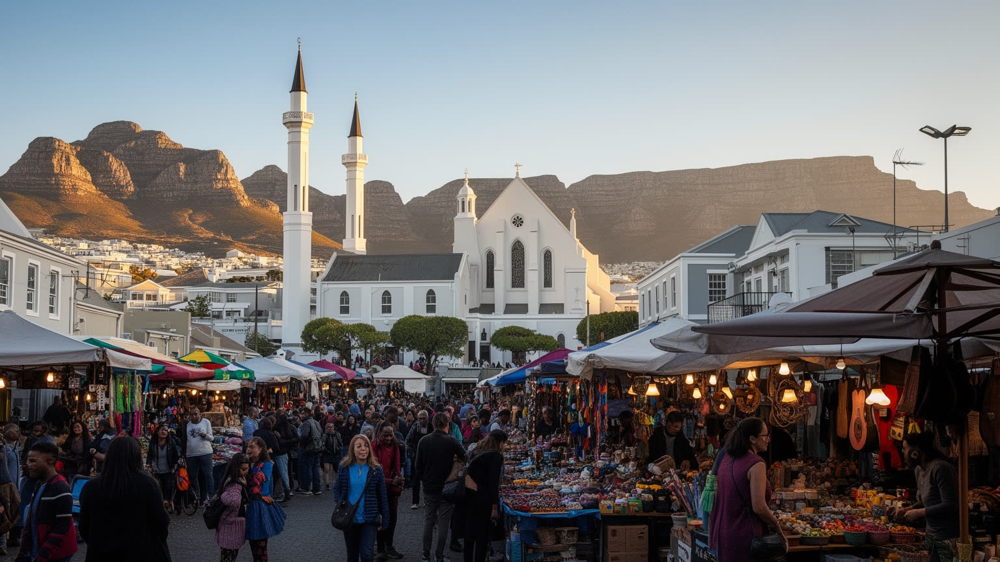
ケープタウンでは、アフリカーンス語、英語、コサ語が日常の場面で交差し、移民の言語も加わります。Malay、Coloured、isiXhosa、Afrikaansの文化は単純に分けられず、家庭、学校、礼拝、料理、音楽、職場で混じり合います。ボーカープのイスラム文化、教会のゴスペル、ケープ・マレーの料理、Cape Minstrel Carnivalの行進、ジャズ、ヒップホップ、タウンシップの音楽、大学の議論は、都市の多層性を作ります。夜には小さなライブハウス、クラブ、ロングストリート周辺のバーで音が続き、日曜には教会の歌声が別の時間を刻みます。カーステンボッシュの芝生に座るコンサートでは、家族、学生、観光客が山を背に同じ音を聴きます。奴隷として連れて来られた人々、植民地支配の制度、先住民の歴史、アパルトヘイト期の分類、民主化後の移動は、文化の形に深く刻まれています。多文化性は観光パンフレットの明るい言葉だけではありません。どの言語で教育を受けられるか、どの宗教施設が近所にあるか、警察や病院で意思疎通できるか、地区の記憶が保存されるかという実務の問題です。文化は美しい飾りではなく、尊厳と帰属を支える制度でもあります。誰の言葉が公式の場で聞かれ、誰の記憶が観光用に整えられるのかを見れば、都市の包摂の度合いが分かります。
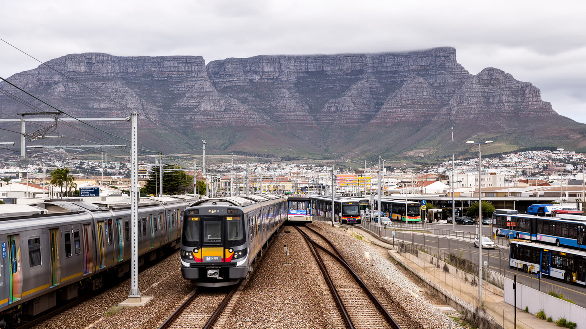
ケープタウンの移動は、都市の不平等を最もはっきり見せます。中心部、港、大学、観光地、海岸の雇用は山と海の近くに多い一方、多くの住民はケープ・フラッツや郊外タウンシップから長い時間をかけて通勤します。鉄道は歴史的に重要な通勤手段でしたが、車両不足、治安、施設破壊、運休、信頼性の低下で利用者の生活を不安定にしてきました。バス、高速バス、ミニバスタクシー、徒歩が不足を埋めますが、運賃、乗り換え、待ち時間、安全性は大きな負担です。タクシー乗り場では行き先を呼ぶ声、クラクション、短い音楽、硬貨の受け渡しが朝のリズムを作ります。観光客が使う空港連絡や沿岸道路の快適さと、労働者が毎朝経験する混雑や遅延の差は、同じ都市の中にあります。移動が不安定だと、仕事に遅れ、学校を休み、医療や行政手続きへ行きにくくなります。景色のよいドライブだけでなく、早朝の駅、大学へ向かう学生、夜勤帰りの人、徒歩で危険な道を進む人を見る必要があります。子どもの送り迎えや高齢者の通院では、乗り換えの不安がさらに大きくなります。交通費も家計を圧迫します。交通は単なる利便性ではなく、都市の機会へアクセスする権利です。鉄道の復旧は雇用、教育、医療への道を戻すことでもあります。分断された都市をつなぐには、安全で信頼できる公共交通が不可欠です。
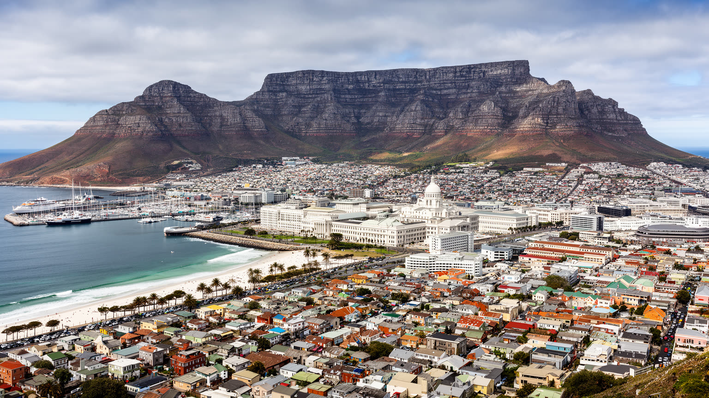
ケープタウンを世界地図の中で読む理由は、山と海の美しさだけではありません。南アフリカ議会、港湾、ワイン産地、観光、大学、映画、金融、ロベン島、ディストリクト・シックス、タウンシップ、水危機が、同じ都市圏で互いに関係しているからです。スタジアムではサッカーやラグビーの声援が響き、ニューランズ周辺ではクリケットの記憶が街のスポーツ文化を支えます。学生は講義、アルバイト、抗議、夜の音楽を行き来し、家族は市場、ブライ、海辺、教会、モスク、学校行事の間で週末を組み立てます。外から見れば、テーブルマウンテンを背にした港町は非常に魅力的です。しかしその景観の内側には、植民地支配、奴隷制、アパルトヘイト、土地の喪失、長い通勤、住宅不足、治安不安、水の制約が残ります。港は輸出と労働をつなぎ、議会は民主主義の声を集め、山と海は共有の環境であり、タウンシップは都市を支える人々の生活拠点です。ケープタウンを理解するには、高級海岸住宅、中心部の議会、観光客の歩道、遠い通勤路、節水の蛇口を同じ地図に置く必要があります。誰が海に近く住めるのか、誰が都市を働いて支えるのか、誰の記憶が公共空間に残るのか。その問いを追うことで、ケープタウンは民主化後の都市が公平性をどこまで実現できるかを示す場所になります。問いは続きます。